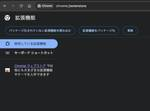

iimon TECH BLOG
https://tech.iimon.co.jp/
iimonエンジニアが得られた経験や知識を共有して世の中をイイモンにしていくためのブログです
フィード

結局「質とスピード」、大事なのはどっちやねん？ 1
1
iimon TECH BLOG
はじめに 成功体験 もうひとつの成功体験 悩みの答え合わせ 保守性を高めるための読書ガイド 理解容易性 変更容易性 テスト容易性 宣伝コーナー はじめに こんにちは、8月からマネージャーにジョブチェンジ（？）したマツダです。 今日は敬愛する t-wada さんのスライド「質とスピード」を参照しながら、私のこれまでの実体験を振り返りながら答え合わせをし、今後目指すべき開発スタイルを探っていきたいと思います。 質とスピード（AWS Dev Day 2023 Tokyo 特別編、質疑応答用資料付き） / Quality and Speed AWS Dev Day 2023 Tokyo Edition…
1日前

ローカル環境でDynamoDBを体験してみる
iimon TECH BLOG
こんにちは！ 株式会社iimonでエンジニアをしている遠藤です。 NoSQLデータベースってどんなタイプのものがあって、それぞれどういう特徴があるのか、概念的なことは何となくわかってきたような気がする(?)けど、実際にNoSQLのデータベースを使用して開発するイメージ(DBとSQLを使わずにやりとりするイメージ)があまり沸かないな…と思ったので、 今回はDynamoDB Localでローカルにデータベースを立てて、Djangoでデータをやり取りする簡単なAPIを生成することで、少しでもイメージを掴んでみよう！という記事になります。 この記事でやることは以下になります。 実際にローカルで動かせる…
4日前

えぇ！？Reactをchrome拡張機能に載せてもいいんですか！？ 1
iimon TECH BLOG
はじめに というか実現できるの？ chrome拡張機能について マニフェスト サービスワーカー コンテンツスクリプト ツールバーアクション とりあえず先人の知恵を借りながら作ってみる。 カスタムについて まとめ 参考URL 宣伝コーナー はじめに 今年の夏も暑すぎませんかね……。 暑すぎて涼しい夜に蝉が鳴いていたり、庭に湧いたコガネムシやカメムシがぶんぶん飛び交ったり。 年々、最高気温の記録が更新されすぎて暑さのボジョ○ヌーヴォ感。 夏って何ですかね……。 とまあ夏の暑さについては置いといて、、 入力チームにてフロントエンドを担当しております、入社半年の新人（だと思いたい）まつむらです。 ii…
10日前
abstractが気になっている
iimon TECH BLOG
はじめに abstract classとはなにか 抽象クラスを使うメリット 実際にabstractを使ってみる abstractの欠点 abstractとinterface 終わりに はじめに iimonでフロントエンジニアをしてますさいとうです。 今回は業務で見かけたabstract について気になったので調べてみました abstract classとはなにか abstractは抽象クラスを作成する時に宣言する修飾子になります。 抽象クラスとは抽象メソッドを1つ以上持つクラスのことです。 特徴としては以下の点が挙げられます 1．インスタンス化できない 抽象クラス自体は直接インスタンス化できず…
11日前

Webアプリのデバッグのをどうやってしているのかという話
iimon TECH BLOG
はじめに iimonでサーバーサイドエンジニアをしている腰丸です。皆さんはアプリケーションのデバッグをどのように行っているでしょうか？ 今回は、簡単なログイン認証機能のコードをもとに、自分がどのような手順でデバッグ作業を行っているかをご紹介します。 あくまで、自分がどうやっているかの紹介なので必ずしも、今回の手順が良いというわけではないのです。 アプリの概要 フロントエンド React TypeScript サーバーサイド Nest TypeScript データベース SqLite 認証 GitHub Apps 機能の概要 ログインボタンをクリックすると ログイン完了後の画面に遷移する デバッ…
17日前
Chrome拡張機能のwebRequestAPIを使って通信を確認してみる
iimon TECH BLOG
■はじめに ■ChromeExtensionAPIとは何か？ ■環境構築 ◆リポジトリをCloneする ◆package.jsonの説明 ◆webpack.config.jsの説明 ◆manifest.jsonの説明 ◆ChromeExtensionのインストール ■content_script.jsとbackground.jsが正しく動作しているか確認 ◆content_script.jsの実行確認 ◆background.jsの実行確認 ■background.jsで通信を確認してみる ■content_script.jsに通信の情報を渡してみる。 ■まとめ ■はじめに こんにちは。 株式…
18日前
React と Vue を基本から調べてみる
iimon TECH BLOG
こんにちは！iimon に 4 月に新卒で入社した木村と申します！今回は、React と Vue について、調べたことをまとめてみました。普段業務で使用しているのは React のため、Vue についての解像度が低いかもしれませんがご容赦ください。 React React はMeta(旧 Facebook)社が開発した UI 構成開発のためのライブラリです。 他のライブラリとともに利用してレンダリングします。 React のサイトで謳われている特徴は以下の三つです。 宣言的な View 宣言的な View を用いてアプリケーションを構築することで、コードはより見通しが立ちやすく、デバッグのしや…
19日前
FetchとAxiosの比較
iimon TECH BLOG
はじめに こんにちはいでです。 この記事では、JavaScriptでHTTPリクエストを行う際の主要な手段であるaxiosとfetchについて比較し、違いやそれぞれのメリットデメリットを説明したいと思います。 fetch とは fetchは、ChromeやFirefoxモダンブラウザに標準で組み込まれているAPIです。外部ライブラリをインストールする必要なく、HTTPリクエストを行うことができます。 fetchのインターフェースがシンプルで直感的です。URLを指定して呼び出すだけでチクエストを送信することができます。 一方でHTTPエラーステータス（404や500など）をエラーとして扱わず、P…
24日前
vue双方向データバインディングを実現する仕組み
iimon TECH BLOG
はじめに object.defineproperty() vue双方向データバインディングを実現する原理 まとめ 最後に はじめに はじめまして、株式会社iimonに4月入社した、フロントエンジニア担当しているみやこしです🍤 みなさんはvueを触るときになぜデータに入力した値がリアルタイムで画面に反映されるか疑問に感じたことありませんか。vueではこのようなことを双方向データバインディングと言います 今回は「vueの双方向データバインディング」はどのように実現しているのかについて話します！ object.defineproperty() まず初めにobject.definepropertyにつ…
1ヶ月前
useReducerの使い方
iimon TECH BLOG
useReducerとは？ useReducerは、Reactのフックの一つで、現在の状態 (state) とアクション (action) を受け取って新しい状態を返すリデューサー関数を使用します。これにより、状態管理のロジックを外部に持たせることができ、テストがしやすくなるという利点があります。 reducerは、現在のstateとactionを受け取って新しいstateを返す関数です。この考え方はuseReducerでも使われており、状態管理ライブラリであるReduxでも一般的に使用されています。 useReducer – React 基本的な構文 reducer: 現在の状態とアクション…
1ヶ月前
DNSの名前解決について
iimon TECH BLOG
はじめに こんにちは。 株式会社iimonでバックエンドエンジニアをしている木暮です。 前回の記事はドメイン名についてまとめさせていただきました。 今回はDNSの名前解決の基本的な動作についてまとめてさせていただきます。 名前解決時に登場する概念 まずは名前解決の際に出てくる概念について説明します。 権威サーバー DNSサーバーとも呼ばれています。 権威サーバーは名前解決するための情報を持っています。 持っている情報のことをゾーン情報、ゾーン情報の中身をリソースレコードと言います。 こちらについては後述します。 権威サーバーは自身が管理している情報をフルリゾルバーへ返却します。 この際に、権威…
1ヶ月前
fetchを中断したい
iimon TECH BLOG
目次 はじめに fetchとは fetchを中止する方法 どんなときにfetchを中止する？ AbortController AbortSignal fetchを中止する流れ ユーザーによる停止 タイムアウトによる停止 さいごに 参考 はじめに はじめまして、株式会社iimonに新卒入社した、フロントエンジニアのかとうです🐣 時間のかかるfetchリクエストを途中でやめたくなったので、fetchを中止する方法をまとめました。 fetchとは fetchは、Javascriptでリクエストを行うためのAPIです。非同期にサーバーから文書や写真などのデータを取得するために使用されます。 fetch…
1ヶ月前
Firestoreで複合インデックスを作成する方法
iimon TECH BLOG
こんにちは エンジニアのタクシです。 Firestoreの複合インデックスの作成方法、関連情報について調査していたのでそのメモをまとめた記事になります。 （今回はインデックスについてのお話のみなので、Firebase・Firestoreの細かい部分などかなり詳細省いているのでご了承ください。。！） 結論 早速ですが結論として、Firestoreで複合インデックスを作成する方法は主に2つあります。 今回は仮にemployeesというコレクションがあるとし、 "age"と"salary"というフィールドで複合インデックスを作成する場合の手順を紹介します。 ① Firebaseコンソール上から作成す…
1ヶ月前
Google Chrome のデベロッパーツール【Network編】について調べてみました。
iimon TECH BLOG
二度目まして！ 株式会社iimonでエンジニアをしている奥島です。 今回は普段使うデベロッパーツールの【Network】について調べてみました。 はじめに Chrome デベロッパー ツールとは Google Chromeにデフォルトで搭載されている開発者向けの検証ツールになります！！！！ Webサイトのパフォーマンスを向上させるための多くの機能が搭載されています。 Networkパネルでできること デベロッパーツールには、機能ごとに分かれたパネルが11個存在しています。今回のNetworkパネルはその中の1つになります。 Networkパネルは、現在開いている画面上で実行した通信のログを確認…
2ヶ月前
Jest Mockマスターへの道(番外編) グローバルオブジェクトのmock化
iimon TECH BLOG
こんにちは。iimonでエンジニアをしている林と申します。 前回はjestのmockの概要やマッチャーや外部APIを叩く処理のmock化をハンズオン形式で紹介しましたが、今回は番外編としてグローバルオブジェクトのmock化についてlocalStorageのmock化を例にして解説していきたいと思います。 こちら参照して頂ければ考え方は同じなのでグローバルオブジェクト(windowオブジェクト)にあるメソッドのmock化は大体問題なく出来るかなって思います。 ぜひご覧頂ければ幸いです。 こちらは以前に記載した2つの記事の知識を前提に解説させて頂いておりますので、まだ未読で気になった方は是非併せて…
2ヶ月前
オブジェクト指向における再利用のためのデザインパターン
iimon TECH BLOG
はじめに デザインパターンとは？ Creational（生成に関するパターン） シングルトン（Singleton） ファクトリーメソッド（Factory Method） ビルダー（Builder） Structural（構造に関するパターン） アダプター（Adapter） デコレーター（Decorator） ファサード（Facade） Behavioral（振る舞いに関するパターン） オブザーバー（Observer） ストラテジー（Strategy） コマンド（Command） ストラテジー（Strategy）とコマンド（Command）の使い分け まとめ デザインパターンのメリット デザイン…
2ヶ月前
Amazon Verified Permissionsで、API Gateway + Cognito構成のAPIの認可設定をする
iimon TECH BLOG
はじめに こんにちは、iimonでエンジニアをしているhogeです。 普段通り生活していたら、ふと思い立ったかのように API Gateway + Cognito構成のサーバレスのアプリケーションに認可を組み込む方法が気になることってありますよね。 AWSの最近のアップデートでAmazon Verified Permissionsを使って、Amazon Cognitoグループに対して簡単に認可を設定できるようになったようだったので、試してみたいと思います。 https://aws.amazon.com/about-aws/whats-new/2024/04/amazon-cognito-cus…
2ヶ月前
今更学ぶFormData〜multipart/form-dataを添えて〜
iimon TECH BLOG
1. はじめに こんにちはiimonでフロントエンドエンジニアを担当している「みよちゃん」です！ 業務中にAPIにリクエストを送信することが多々あり、その際にFormDataを使用しているのですが、お恥ずかしながらその正体をちゃんと理解しないまま使用していました。 このままではいけない！と思い今回復習を兼ねて記事にまとめていきます！ 2. そもそもFormDataって? FormDataインターフェイスは、フォームフィールドとそれらの値から表現されるkeyとvalueのセットを簡単に構築することができる手段です。FormDataはfetch やXMLHttpRequest.send、novig…
2ヶ月前
改善チームのエンジニアとして意識していること
iimon TECH BLOG
背景 🖼️ 今やっていること 🏃 意識していること 🧠 運用チームとのコミュニケーション 🗣 技術調査結果の共有はするが提案はしない 🙅♂️ 運用チームごとの開発の進め方にしたがう 🏃 Reviewerになってもらう運用チームのメンバーの負担を考える 🤔 Reviewerになった時に開発をなるべく止めないようにする 🚄 技術調査したものを形にして残す ✏️ 当たり前に疑問を持つ 🤔 業界、顧客の業務に関心を持つ 🕵️ 最後に 🔥 参考 📚 背景 🖼️ 初めまして！たいせいです。 私は1人目改善チームのエンジニアになり、ほぼ1年経ちました。 元々フロントエンドの経験が多いですが、改善チームに入…
2ヶ月前
JavaScript 従来の関数とアロー関数の違い
iimon TECH BLOG
1. コンストラクタとしての使用 2. thisのバインディング 3. superのバインディング 4. メソッドとしての使用 5. argumentsの有無 6. prototypeプロパティの有無 7. call、apply、bind の使用 8. ジェネレータとしての使用 まとめ こんにちは！ 株式会社iimonでエンジニアをしている遠藤です。 最近ふと、アロー関数と従来のfunction式を用いた関数(以降「従来の関数」と呼びます)の違いをあまり意識せずに、何とな〜くでアロー関数を使ってしまっているな〜と思うことがありました。 そこで、今回は従来の関数とアロー関数の構文以外の主な違いに…
2ヶ月前
ベクトルデータベースについて調べてみた
iimon TECH BLOG
こんにちは、iimonでエンジニアをしている須藤です。 今回は、AWSのdocumentを読んでいて、ベクターストアという記述があり気になったので調べてみました。 ベクトルデータベースとは ベクトル化について ベクトル化に利用するモデルと概要 ドキュメントベースのモデル(意味的関連性) bag-of-words(文章を単語に分けて順序関係なしに袋に詰めるイメージ) LSA、PLSA、LDA(トピックモデル) ニューラルネットワークを用いたアプローチ word2vec(単語の意味を考慮できるモデル、意味的類似性) RNN(リカレントニューラルネットワーク) LSTM(長・短期記憶) Transf…
2ヶ月前
実録！別れて幸せになる方法（あくまでもコンポーネント設計の話
iimon TECH BLOG
はじめに こんにちは！4月にジョインしましたマツダと申します。 これまではどちらかというとバックエンドの開発を主1にやっていたのですが、 iimonに入ってからはフロント中心に担当させていただいています。 これまではTDD（テスト駆動開発）での開発経験もあって、自動テストがもたらしてくれる安心感に身を委ねる開発スタイルにすっかり慣れてしまっていたのですが、今の担当プロダクトではテストが書かれているのは一部に留まっているようでした。 また、コンポーネント設計はatoms,molecules,organismsからなる、いわゆるAtomic Designを採用しているのですが、見た目とロジックが混…
3ヶ月前
VueRouterを使ったSPAに触れてみる
iimon TECH BLOG
■はじめに ■前提 ■SPAのメリット・デメリット ◆メリット ◆デメリット ■環境構築 ■VueCLIで作られた雛形のコードを確認してみる ■通信の中身を見てみる ■動的ページを追加してみる ◆ステップ１：viewファイルを作成 ◆src/App.vueに一覧ページへ遷移するリンクを作成する ◆VueRouterの設定を追加 ◆画面の動きと通信を確認してみる ■まとめ ■はじめに こんにちは。 株式会社iimonでフロントエンドを担当している「白水」です。 今回は「VueRouterを使ったSPAに触れてみる」というテーマで書いていきたいと思います。 ■前提 SPAとは「Single Pag…
3ヶ月前
TypeScriptのclassってなんだ？
iimon TECH BLOG
はじめに はじめまして！株式会社iimonにてフロントエンドエンジニアをしております、ガジェットおじさんです！ 業務では主にTypeScriptの型と睨めっこをしています！ TypeScript書いてますか？静的型付け言語はいいぞ！ 文字通り型をつけられるので事故が減ったり、予測が容易になったりとメリットが多い。 一度、型を使ったらもう素のJavascriptなんて恐ろしくて使えない……。 今回はそんな中毒性のある言語であるTypeScriptにおけるクラスについて書いていこうかなと思います！ はじめに classってなんだ？ namespaceとは implementsとextendsについ…
3ヶ月前
#Web開発でよく使うHTTPメソッド、冪等性（べきとう）、安全性に関して！
iimon TECH BLOG
こんちは〜 おくしまです！！ 今回はよく使う代表的なHTTPメソッドと冪等、安全に関して調べてみました！ HTTPメソッドの種類について（主なHTTPメソッド） GETメソッド（データ取得） GETメソッドが使われる場面 Webページ(HTML, もしくはプログラムによって動的生成されたHTML)の取得 API経由でデータを取得 画像データの取得 CSSファイルの取得 JavaScriptファイルの取得 POSTメソッド（ データの作成） POSTメソッドが使われる場面 Webページ上のフォームからデータを送る SNSなどのアカウントを新しく作成するとき 新しくブログを投稿するとき PUTメソ…
3ヶ月前
「APIってなに？」から「実際に作ってみた！」
iimon TECH BLOG
こんにちは！なかむらです。 普段はChrome拡張機能の「入力速いもん」フロント側の開発を行っています。 タスクでデータの流れを見る際にAPIに渡しているデータをみることが時々あるのですが、正直APIっていまいちピンと来ていませんでした。 なので、今回はまず「APIってなに？」からすごーく簡単な「WebAPIを作ってみる！」ところまでやっていこうと思います！ そもそもAPIってなに？ HTTP通信 WebAPIを作るにはどうしたらいいの？ テーマ決め URLの設定 レスポンスデータの設計 実際に作ってみよう！ STEP1 : Postman インストール STEP2 : 環境構築 STEP3 …
3ヶ月前
エンジニアの作業効率化に役立ちそうなツールを紹介
iimon TECH BLOG
はじめに こんにちは。 エンジニアの腰丸です。 普段皆さんは、どのようなツールを使っているでしょうか。 今回は、自分が数年間エンジニアとして業務をしていくなかで、 生産性の向上につながっていると感じたツール類を紹介します。 Raycast www.raycast.com Mac向けのランチャーアプリです。 キーボードショートカットでアプリを起動したり、クリップボードの履歴保存や、スクリプトの保存など、便利な機能が多いです。Macならぜひ入れておきたいツールです。 jetbrains製品のIDE www.jetbrains.com jetbrainsという会社が提供しているIDEです。コードの補…
3ヶ月前
JavaScriptでコードゴルフをやってみよう！
iimon TECH BLOG
はじめに こんにちは。 エンジニアのデッサンです。 今日はコードゴルフを社内のみなさんと一緒にやってみようと思います。 コードゴルフとは まず最初にコードゴルフとは、 お題に対してできるだけ短いコードで実装することを目指すゲームです。 名前はゴルフと同じようにスコアを競うように、プログラムのコード数を競います。 ルール コードゴルフの基本的なルールは、コードの長さを最小化することを目的としています。 以下を考慮するとコード数の削減に繋げれます。 変数名や関数名を短くすることでコードを短くする 三項演算子などを使って条件文を短くする スペースや改行を最小限に抑える 配列メソッドを活用してループを…
4ヶ月前
ブラウザのオブジェクトモデルの構築について
iimon TECH BLOG
はじめに こんにちは。 株式会社iimonでフロントエンドを担当している保田です。 今回はブラウザがレンダリングする際に構築されるDOM（Document ObjectModel）とCSSOM（CSS Object Model）について書きました。 レンダリングとは？ ブラウザに指定されたURLをブラウザの画面に表示することです。 ブラウザには以下のように、さまざまな機能が搭載されていますが、レンダリングの役割を担っているのがレンダリングエンジンです。 以下のサイトでまとまっているように使用されているレンダリングエンジンは使用されているブラウザごとにさまざまです。 webukatu.com 引…
4ヶ月前
ドメイン名について
iimon TECH BLOG
はじめに こんにちは。 株式会社iimonでバックエンドエンジニアをしている木暮です。 自身のキャリアを振り返るとコードを書くことは長年やってきたのですがインフラ周りやミドルウェア関連の知識がまだまだだなと感じていました。 CTOにオススメいただいたDNSについて勉強をしています。 今回の記事はドメイン名についてまとめました。 DNSとは 今回の趣旨から外れていますがそもそもDNSってなんですか？という人向けに簡単に説明させていただきます。 Domain Name Systemのことを指しています。 主にドメイン名に紐づくIPアドレスを取得する仕組みになります。 例えばiimon.co.jpの…
4ヶ月前